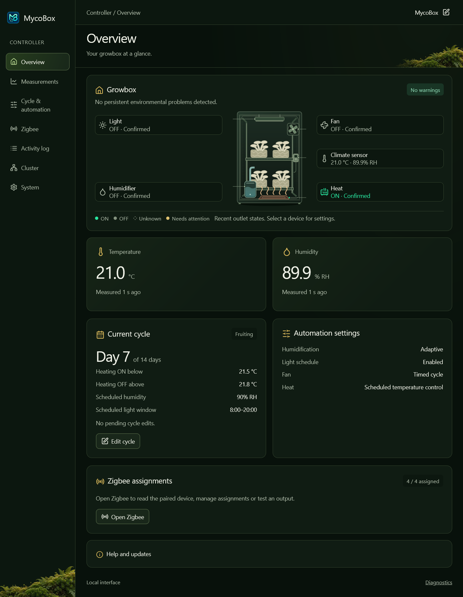
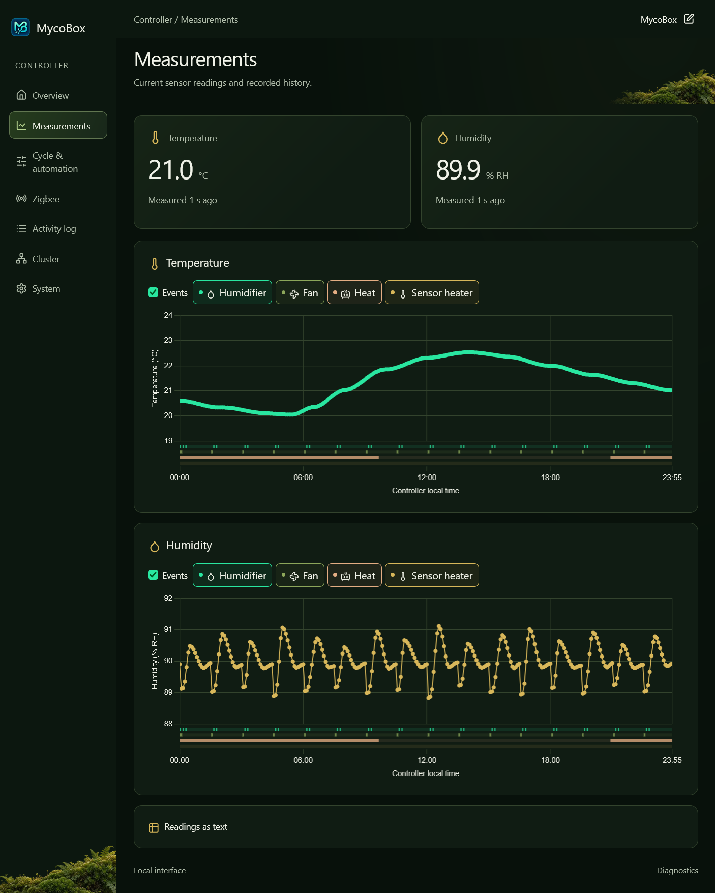
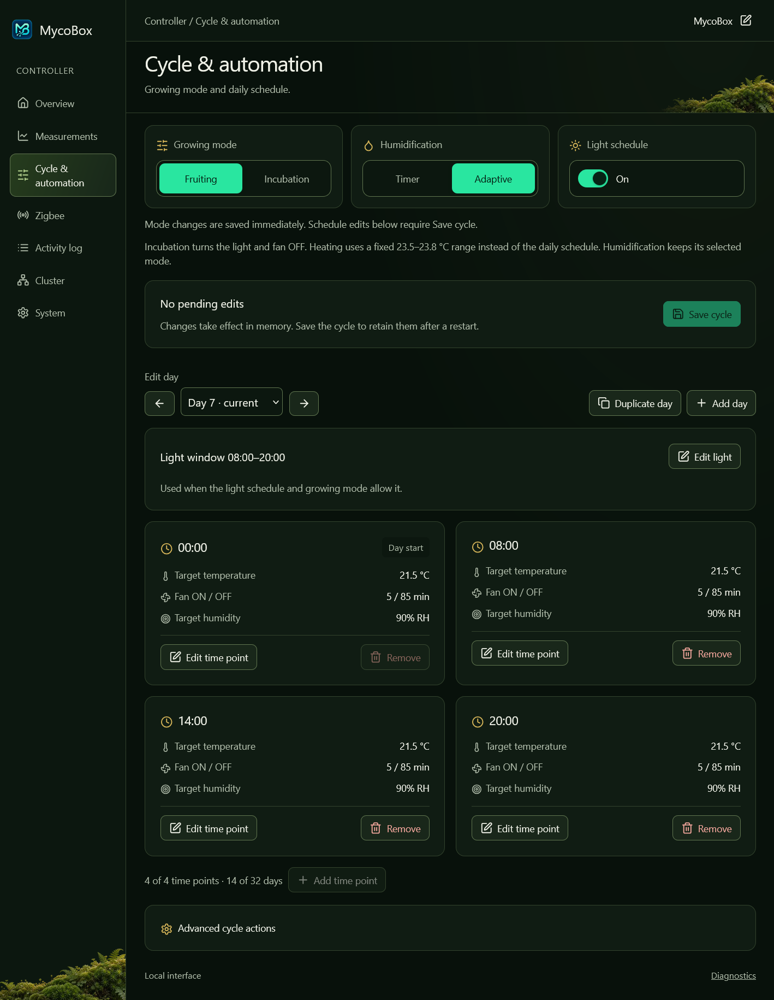
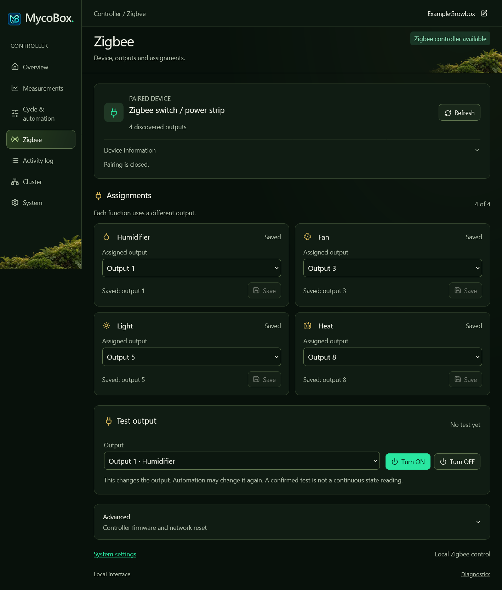
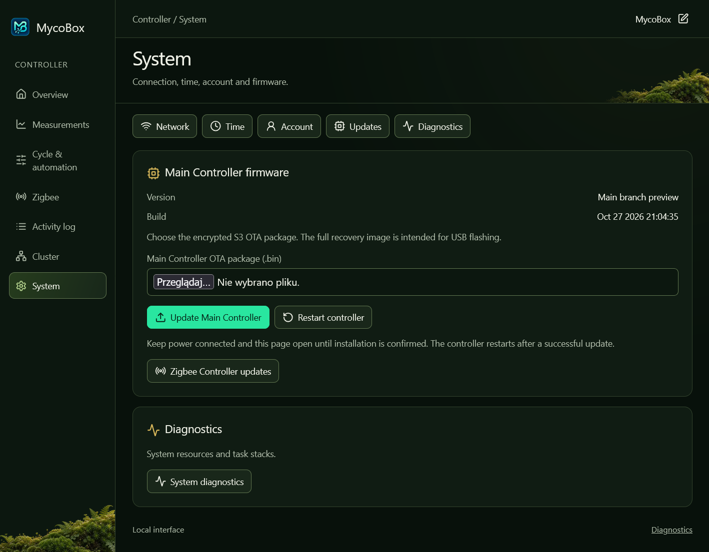

Humidity, your way.
Use scheduled ON/OFF periods in Timer mode or Adaptive pulses guided by humidity readings and the active target.
A growing space. A local connection.
Monitor temperature and humidity. Follow your growing cycle. Manage humidification, ventilation, heating and lighting from one local interface.
Runs on your controller. Opens in your browser.

Open full screenshot ↗A closer look
Move between current conditions, measurement history and equipment settings. Everything belongs to the same local interface.

Follow temperature and humidity alongside humidifier, fan, heat and sensor-heater activity.

Adjust targets and timing across up to 32 days. Use Save cycle to keep your schedule after a restart.

Pair one compatible Zigbee outlet or power strip and assign a different detected output to each required function.

Update the Main Controller in System and the Zigbee Controller on the Zigbee page.
Approximately 24 hours of history, stored in memory. Readings start again after a restart.
Read the interface guideMake room for the cycle
Choose the timing and targets that fit your setup. Keep settings consistent throughout a cycle or change them as it progresses.
Use scheduled ON/OFF periods in Timer mode or Adaptive pulses guided by humidity readings and the active target.
Set fan ON and OFF periods, then follow the confirmed output state alongside changes in your readings.
In Fruiting, heating follows the active temperature schedule. Incubation uses its fixed heating range.
Set the hours for lighting. Incubation mode keeps the fan and light OFF while retaining the selected humidification mode.
Schedule edits take effect in memory. Save cycle keeps them after a restart.
Explore cycle settingsClose to your growing space
MycoBox stores its web interface on the controller. Open it from a phone or computer through your local Wi-Fi network or the controller’s access point.
Automation runs on the controller, without a permanently connected computer.
An initialized hardware RTC keeps local time without internet. NTP synchronization is optional.
Follow local warnings and readable activity events. Open Technical details for a closer diagnostic look.
Getting started
Join the controller’s access point and open its local address.
Set your network, account, time and timezone.
Identify the Zigbee outputs. Save assignments and verify each connected function.
Choose the modes, set the schedule and observe the equipment through its transitions.
Keep the details within reach
First connection and initial setup.
Screens, readings and cycle editing.
Hardware and switching devices.
Pairing, assignments and output tests.
Choosing files and installing updates.
Connection, sensor and control problems.
Firmware releases
Choose compatible Main Controller and Zigbee Controller firmware using the release notes. S3 OTA retains saved settings. After an H2 update, pair the device again, restore assignments and test each output.